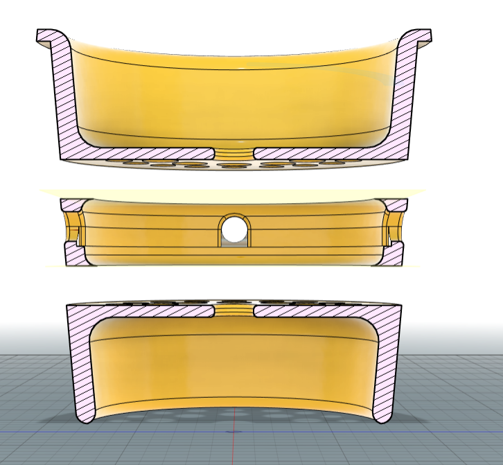
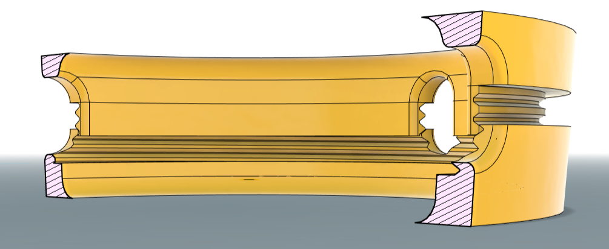
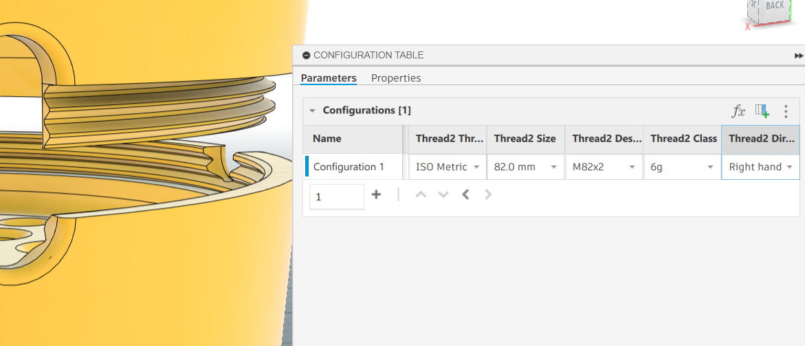

My Side Projects
In my spare time, since graduating from Harvard, I have been keeping myself busy with smaller projects. I created this website from scratch (0 HTML exposure until 2 months ago!). I am currently working on another website dedicated to coaching students and athletes to reach their goals, and inform them on the NCAA process. I am also taking Harvard's free "CS50" course, to brush up on my computer science skills.
Outside of computer science, I have worked with my best friend on a few smaller projects. Firstly, I have taken advantage of Fusion360's free membership in order to design, prototype and build, numerous dog toys for my own dogs. On top of that, my friend and I have began 3D printing and marketing sports equipment under the brand name "LAYR55".
On this page you can find more info, as well as images of these projects, and a link to relevant websites.
3D Printed Dog Toys
Using Fusion360, I designed, prototyped, and built numerous dog toys for my dog. Below are images of the toys, as well as the process of building them :)






3D Printed Sporting Equipment
Between finishing my junior year and beginning my internship with Alesi Surgical, I had the opportunity to shadow at the Aston Martin Lagonda factory responsible for building the DBX707: the brand’s high-performance luxury SUV. Working closely with the engineering team, I assisted in evaluating and inspecting vehicles during various stages of production, identifying and scoring any issues, and flagging them when necessary. This process involved coordinating directly with relevant teams to help determine and implement solutions.
I was able to observe every phase of the vehicle’s assembly; from the initial construction of the chassis tub to final performance testing on the track. In addition to technical inspections, I also conducted audits to ensure each workstation and its staff were operating according to company standards.